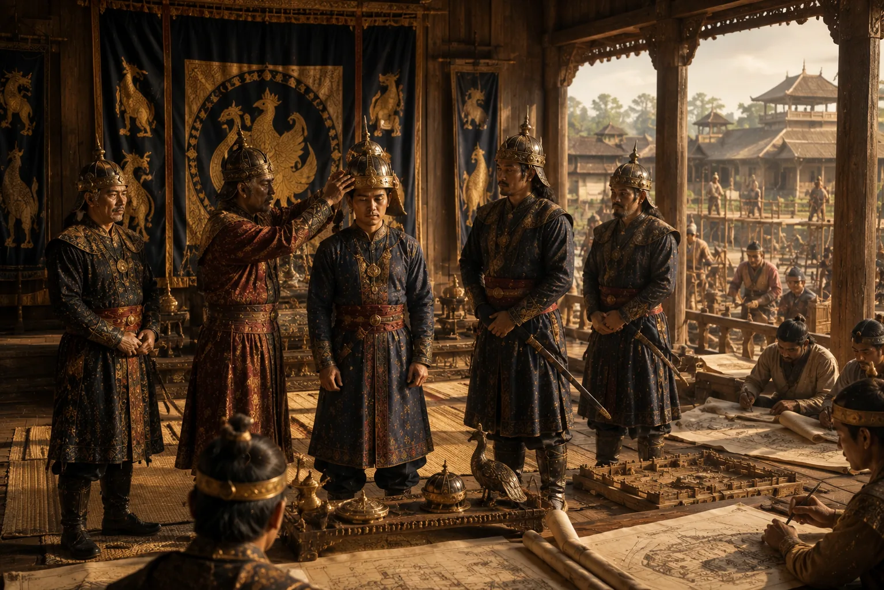

Accession of Suklenmung
1539 · Swarganarayan’s kingdom

Suklenmung ascends the throne following Suhungmung's death, establishing Garhgaon as the royal residence.
Sources have not yet been catalogued for this record.
People: Suklenmung (Garhgayan Roja)
Open this scene in the interactive archive · Follow this event on MAP